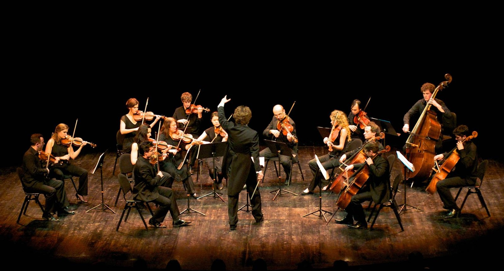

Cordas
História dos instrumentos de cordas
Os primeiros instrumentos de cordas remontam à antiguidade, onde culturas como a suméria e a egípcia utilizavam harpas e liras. Estes eram inicialmente feitos de materiais naturais, como tendões de animais para cordas. Com o tempo, civilizações como os gregos aprimoraram esses instrumentos, introduzindo a cítara. Na Idade Média, surge a vihuela na Península Ibérica, precursora do violão moderno, e o alaúde no mundo árabe, influenciando a evolução dos instrumentos de cordas na Europa.
Durante o Renascimento, surgem os primeiros violinos na Itália, com instrumentos de cordas graves como a viola da gamba também ganhando popularidade. O barroco testemunha a padronização da família dos violinos, com Stradivarius e Amati contribuindo para a construção de instrumentos notáveis. A revolução industrial viu o desenvolvimento de métodos de produção em massa, ampliando o acesso a violinos, violoncelos e violas. Esses instrumentos de cordas, ao longo da história, desempenharam papéis cruciais em orquestras, conjuntos de câmara e na música popular contemporânea.
Quais são os instrumentos de cordas?


Você sabia?
O instrumento de cordas mais antigo conhecido é a lira? Ela remonta a cerca de 3.500 anos a.C! Era popular na antiga Mesopotâmia e Egito, sendo tocada em diversos eventos.
Em 2019, um baixista tocou uma linha de baixo de 100 horas sem parar em um vídeo no YouTube?
Já ouviu falar no hurdy-gurdy? É um curioso instrumento de origem medieval, possui cordas que são friccionadas por uma roda giratória, enquanto as teclas e alavancas ajustam a tensão das cordas para produzir diferentes notas.